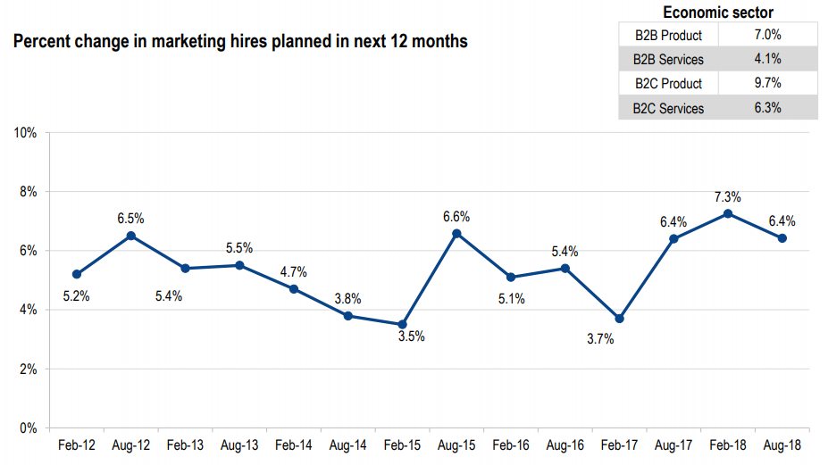
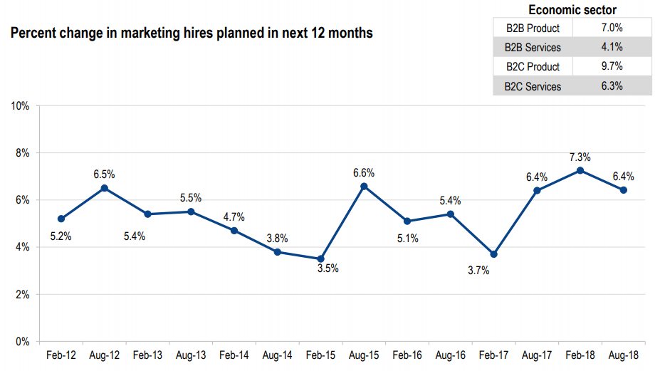

Personal Infomation & Industry Data
Personal Infomation: My name is Van Chanh VO and studying in RMIT with
the
student number 3748121. Vietnam is my
nationality. Living and gaining experience in Australia are a great opportunities with
me. I
graduated English language programs and Foundation Study of science at RMIT. Spending
time
for playing games and playing soccer are also my hobby. Interested in exploring security
computing and developing & designing website are what I want to study in Information
Technology course. Getting experience of developing website and java language are In my
period of Studying Information Technology. Working in the group with developing website
for
the second assignment, we discissed and decided to chose " Destiny " will be our group
name.
Three test outcomes: I have done 3 tests: Myers-Briggs Test, Learning Style Test and Creative Test for the Assignment 1. The results of these test tell me about my personality to adapt for life and work. These results may influence a lots of my behaviour in a team. It not only shows me but also with me team about advantages or disadvantages of my industries. It also showing the way for my-self to changing and contributing more for the team. Finding the best fit for the role is also a part of forming the team and do not forgot for willing to commit to their role.
Industry Data :
Network engineer is the Job Titles for my group ideal job.
IT-specific skills for Netwrok engineer:
- Programming Languages -Computer systems and networks - Electrical/electronic engineering - Computer science - Computer software/computer systems engineering
General skills for Netwrok engineer:
-An analytical mind -An ability to learn new technologies quickly -Good time management skills -An ability to follow processes -Strong documentation skills -Good communication skills
The three highest ranked IT-specific skills which are not in your required skill set: SQL, Business Management and Graphic Design
The the three highest ranked general skills which are not in your required skill set: Leadership, mentoring and building effective relationships
After looked at the Burning Glass Data, my ideal job at Web Developer still does not change. Finding a job is an important part for me. So when looking at the Top IT Job through 2017 until 2018, I can see that Web Developer usually stayed in the middle of the Top IT Job Tittle ladder.
Three test outcomes: I have done 3 tests: Myers-Briggs Test, Learning Style Test and Creative Test for the Assignment 1. The results of these test tell me about my personality to adapt for life and work. These results may influence a lots of my behaviour in a team. It not only shows me but also with me team about advantages or disadvantages of my industries. It also showing the way for my-self to changing and contributing more for the team. Finding the best fit for the role is also a part of forming the team and do not forgot for willing to commit to their role.
Industry Data :
Network engineer is the Job Titles for my group ideal job.
IT-specific skills for Netwrok engineer:
- Programming Languages -Computer systems and networks - Electrical/electronic engineering - Computer science - Computer software/computer systems engineering
General skills for Netwrok engineer:
-An analytical mind -An ability to learn new technologies quickly -Good time management skills -An ability to follow processes -Strong documentation skills -Good communication skills
The three highest ranked IT-specific skills which are not in your required skill set: SQL, Business Management and Graphic Design
The the three highest ranked general skills which are not in your required skill set: Leadership, mentoring and building effective relationships
After looked at the Burning Glass Data, my ideal job at Web Developer still does not change. Finding a job is an important part for me. So when looking at the Top IT Job through 2017 until 2018, I can see that Web Developer usually stayed in the middle of the Top IT Job Tittle ladder.
Personal Infomation: My name is Hao Ta and I am currently studying the
Bachelor of Information Technology at RMIT (s3844588). My family consists of 4 people,
including my mother, father, older sister and I. While my nationality is Chinese, I was
born
in Vietnam and moved to Australia when I was 11 to pursue my studies. I am capable of
speaking English and Cantonese. My family do not own any pets at the moment but I do
want to
own a cat and dog in the future! I completed Year 12 at Narre Warren South P-12 College
in
2019 and completed 2 IT courses in 2018, Software Development and Informatics as part of
the
VCE program. A fun hobby I like to indulge in is browsing Reddit! There are a lot of
news
articles on Reddit but also many discussions about various topics on there such as
gaming
and cooking. It's how I like to spend my free time.
Three test outcomes: The results of the tests i did represent the dominant qualities about my personality, with some similarities between the Myers-Briggs test and the Big Five Personality Test. Myers-Briggs indicates that I’m a more introverted person than a social butterfly, and an observant person rather than directly leading others and taking action. Similarly, the Big Five Personality test suggests that I’m a quiet and reserved person and avoids taking on leadership roles. The learning style test indicates that I'm a visual learner and relies on diagrams and pictures to understand a problem, which I agree with.
Industry Data :
The highest ranked IT specific skill from my job is Microsoft Windows, and the rest aren’t even ranked ( except for Microsoft Office, but it’s still ranked pretty low, indicating that my job doesn’t contain many skills that are required by employers. The responsibilities listed in my job suggests that I require problem-solving,organisation and trouble-shooting skills, all of which are ranked high in the Burning Glass data list. The 3 highest ranked IT-specific skills which aren’t in my required skill set are ‘SQL’, ‘JavaScript’ and ‘JAVA’, and the 3 highest ranked general skills which aren’t in my required skill set are ‘communication skills’, ‘writing’ and ‘teamwork/collaboration skills’. Looking at the Burning Glass data I can form new opinions about the job. Looking at the list of Top IT Skills from March 2018 I notice that the skills essential in my job aren’t ranked high on the list except for Microsoft Windows. This brings a small concern to me as my ideal job doesn’t require the skills in which others think is good to have, if i manage to land the job in the future but later quit i wouldn’t have the set of skills many others have and that would put me in an unfavourable situation. The Top Generic Skills list has ‘communication skills’ as the most desired skill by a landslide, which doesn’t sway my opinion on my job. Other entries on the list such as ‘problem solving’ and ‘organisation skills’ also have little influence on my opinion as my job doesn’t require much talking and more focus on desk jobs. The Top IT Job Titles features more ‘engineer’ and ‘developer’ jobs as opposed to desk jobs and ‘support’ jobs, but overall my opinion of my ideal job still remains pretty much the same.
Three test outcomes: The results of the tests i did represent the dominant qualities about my personality, with some similarities between the Myers-Briggs test and the Big Five Personality Test. Myers-Briggs indicates that I’m a more introverted person than a social butterfly, and an observant person rather than directly leading others and taking action. Similarly, the Big Five Personality test suggests that I’m a quiet and reserved person and avoids taking on leadership roles. The learning style test indicates that I'm a visual learner and relies on diagrams and pictures to understand a problem, which I agree with.
Industry Data :
The highest ranked IT specific skill from my job is Microsoft Windows, and the rest aren’t even ranked ( except for Microsoft Office, but it’s still ranked pretty low, indicating that my job doesn’t contain many skills that are required by employers. The responsibilities listed in my job suggests that I require problem-solving,organisation and trouble-shooting skills, all of which are ranked high in the Burning Glass data list. The 3 highest ranked IT-specific skills which aren’t in my required skill set are ‘SQL’, ‘JavaScript’ and ‘JAVA’, and the 3 highest ranked general skills which aren’t in my required skill set are ‘communication skills’, ‘writing’ and ‘teamwork/collaboration skills’. Looking at the Burning Glass data I can form new opinions about the job. Looking at the list of Top IT Skills from March 2018 I notice that the skills essential in my job aren’t ranked high on the list except for Microsoft Windows. This brings a small concern to me as my ideal job doesn’t require the skills in which others think is good to have, if i manage to land the job in the future but later quit i wouldn’t have the set of skills many others have and that would put me in an unfavourable situation. The Top Generic Skills list has ‘communication skills’ as the most desired skill by a landslide, which doesn’t sway my opinion on my job. Other entries on the list such as ‘problem solving’ and ‘organisation skills’ also have little influence on my opinion as my job doesn’t require much talking and more focus on desk jobs. The Top IT Job Titles features more ‘engineer’ and ‘developer’ jobs as opposed to desk jobs and ‘support’ jobs, but overall my opinion of my ideal job still remains pretty much the same.
Personal Infomation: My name is Haochen Wang, I study in RMIT
University,
my
student number is s3701719. I am from Jiangsu Province in China it has a long history
and
famous culture, I am now in bachelor of information technology since 20th Jun 2020,
because
I want to get some particular job to develop my talent, maybe robots’ control
technology.
After my basic information, and I will refer other of my information about something
belong
to my favor, cooking, because of COVID-19, I do afraid that takeout’s package may
contain
virus, so I learn how to cook. I have cooked many meals and I have cooked meal for many
times, so I have more and more interests. Robotic Control is one of the branch that I
want
to explore in my major of IT study. I am experiencing java language programming and
GitHub
website operation. Now I work in assignment 2 of intro to IT subject with my group
member.
So my group’s name is “Destiny”.
Three test outcomes: I have got three tests: Myers-Briggs Test, Learning Style Test and Creativity Test. It is a good thing to get extraverted, this can makes me solve more and more problems. I always have intuitive energy. Besides, I have got interests in IT. It is good to feeling some particular systems’ working process in IT or any other science and technology. And then understand it. However, when it gets problem, or when we want to invent something unprecedent, we have to thinking. I know that in my future, I will face to some problems, thinking and exploring the issues is a only one method to develop, because when I understand the entire system and entire device, I can think and I can explore and fix it. Also, In my future, I want to invent something new to give people more and more convenience and more free time to spend on important works. This also let me think and then design. We have to consider before we plan. So judging is a better choice.
Industry Data
IT-specific skills and general skills must need ranking, especially need demands from employers. As an employer, I need employees need to have three of the highest skills, top three IT-specific skills and top three general skills. For IT-specific, employees need to have basic grasp like SQL, which is one important skill that need employees to understand the storage and manipulation of database. As long as IT, we need database to record. Then is JAVAscript, when refer to JAVA, we will firstly come up with one: JAVA Language Programming. This is a common program design in information technology. As long as we do understand programming, in the future, in our job, we can have the most accurate actions on computers without gap. Then Windows server is the third one, because Windows is the most common type of the computers, its server cares many aspects. Just pay many effects on server, we can have a deeper professionals in IT.
For general skills, we need to be creative, where here is a creativity, here will be probably a novelty. Also we need communication, this need us to build teams, thus we can communicate and organize, can probably solve problems. But before all the actions, we need to plan something properly. Because everything has its own process, for finishing without problems, we need planning.
I am just a newbie, I have only understand extreme little IT-specific skills, I have only one to five percent of JAVA and SQL, I have no idea about server, but I am pretty hope that I will have more and more experience after I finish postgraduate. Also, I am not so creative, maybe I have not touched enough eyesight in technology. Also I need to consider some ideas to solve problems by myself initially, I have to try it myself, if cannot, I can communicate. Also, I have no ability on management, because I have not do some works as a monitor, but it does not matter, in my job, I just do research in company.
I have seen the subjects in burning glass technology, because I am interested in robotics, which means robotic controlling is from a system. And it is a chance to study system engineering in IT as my ideal job. It can be said that my opinion just changed by a half.
Three test outcomes: I have got three tests: Myers-Briggs Test, Learning Style Test and Creativity Test. It is a good thing to get extraverted, this can makes me solve more and more problems. I always have intuitive energy. Besides, I have got interests in IT. It is good to feeling some particular systems’ working process in IT or any other science and technology. And then understand it. However, when it gets problem, or when we want to invent something unprecedent, we have to thinking. I know that in my future, I will face to some problems, thinking and exploring the issues is a only one method to develop, because when I understand the entire system and entire device, I can think and I can explore and fix it. Also, In my future, I want to invent something new to give people more and more convenience and more free time to spend on important works. This also let me think and then design. We have to consider before we plan. So judging is a better choice.
Industry Data
IT-specific skills and general skills must need ranking, especially need demands from employers. As an employer, I need employees need to have three of the highest skills, top three IT-specific skills and top three general skills. For IT-specific, employees need to have basic grasp like SQL, which is one important skill that need employees to understand the storage and manipulation of database. As long as IT, we need database to record. Then is JAVAscript, when refer to JAVA, we will firstly come up with one: JAVA Language Programming. This is a common program design in information technology. As long as we do understand programming, in the future, in our job, we can have the most accurate actions on computers without gap. Then Windows server is the third one, because Windows is the most common type of the computers, its server cares many aspects. Just pay many effects on server, we can have a deeper professionals in IT.
For general skills, we need to be creative, where here is a creativity, here will be probably a novelty. Also we need communication, this need us to build teams, thus we can communicate and organize, can probably solve problems. But before all the actions, we need to plan something properly. Because everything has its own process, for finishing without problems, we need planning.
I am just a newbie, I have only understand extreme little IT-specific skills, I have only one to five percent of JAVA and SQL, I have no idea about server, but I am pretty hope that I will have more and more experience after I finish postgraduate. Also, I am not so creative, maybe I have not touched enough eyesight in technology. Also I need to consider some ideas to solve problems by myself initially, I have to try it myself, if cannot, I can communicate. Also, I have no ability on management, because I have not do some works as a monitor, but it does not matter, in my job, I just do research in company.
I have seen the subjects in burning glass technology, because I am interested in robotics, which means robotic controlling is from a system. And it is a chance to study system engineering in IT as my ideal job. It can be said that my opinion just changed by a half.
Personal Infomation: My name is Minwoo Tak. My student number is
S3818058.
I am currently majoring in Information Technology in RMIT. I live in South Korea where I
was
born and raised.
My family is consisted of 3 members. My parents and me. As I don't have any brothers or
sisters. I loved play games alone when I was young.
Playing games is still my hobby but also a milestone that lead me to IT. As My PC when I
was
young had terrible performance so I couldnt run any game on that PC.
It made me to look for PC components to replace. while looking for them, I learned how
those
components function in computer.
It ignited my interest of PC-related fields. and that is why I am learning Information
technology.
Three test outcomes: The result I got from the Myers-Briggs test is ISFP, Adventurer. People who belong to this personality type are likely to live their life with immediate inspirations. They love to break certain social frames and try different and diverse things that the others won't willingly try. I think I can utilize my personality when discussing with teammates like critical thinking to suggest unexpected weaknesses of idea. My learning style test indicates that I am a person who understand something better and faster with Auditory. I think this would function as a soft skill during the teamwork. Another test I did is a creativity test. I got 58.57 with this test. I think it shows that I am lacking of creativity a bit. but also whom should I collaborate with.
Industry Data
The most appropriate job listed on the Burning Glass data is network engineer. The way we ranked those job titles are, how much is it related to our major, or a job we want to be. As many of us wanted different job to get, we compared our ideal job and we figured out some fields that each ideal job shares. Such as major, or certain process we need to achieve to be employed as an ideal job, or even similarities among the works given for the job.
From your group’s ideal jobs, you can identify a set of skills required for these jobs. These can be divided into general skills and IT specific skills.
- Among the skills I am required to achieve for my job, I see Microsoft windows, SQL, Network programming are listed on the graph. SQL and Microsoft windows are listed at the top of the graph. Which may mean, employers tend to prefer a worker with understandings or knowledge rather than a worker who is skilled at engineering.
- Most of general skills demanded by the employers were the skills required when working as team. The most demanded one is Communication Skills, which is most required in working as team for better cooperation and efficiency. Problem Solving also ranked right behind Communication skills. Which is also an essential skill to IT-related workers.
- Project management, Business management and Business analysis are the top three highest skills ranked among the skills not in my required skill set. I see these are not essential to me but I still believe some basic understandings of those skills are required. As the more understanding I have about how the businesses related my work go on, the better result will come out.
- I see Orientation skills, writing skills and planning skills are listed on the graph but not belonging in required skill set. Which are also not essential skills for my job. However, as I work as a team in this field, I believe being competent with these skills will make me more qualified. As I may face a situation where I need to report the current status of work.
- To be honest, I believed nothing else is needed as long as I achieve certain qualification for my job. Such as bachelor degree of IT-related major, or few years of apprenticeship or working experiences in similar field. However, after having looked at Burning Glass data which is indicating top demands of employers’ perspectives, my opinion is apparently changed. As Soft skills required by the employers were way heavier than I thought. I considered those general skills I need to achieve to get a job as certain degree having no difficulties working as a team. I also thought employers would prefer skilled worker regardless of how they are skilled in terms of general skills. Now I see general skills weigh more than I thought, as much as the employers consider the IT-specific skills the workers have got.
Three test outcomes: The result I got from the Myers-Briggs test is ISFP, Adventurer. People who belong to this personality type are likely to live their life with immediate inspirations. They love to break certain social frames and try different and diverse things that the others won't willingly try. I think I can utilize my personality when discussing with teammates like critical thinking to suggest unexpected weaknesses of idea. My learning style test indicates that I am a person who understand something better and faster with Auditory. I think this would function as a soft skill during the teamwork. Another test I did is a creativity test. I got 58.57 with this test. I think it shows that I am lacking of creativity a bit. but also whom should I collaborate with.
Industry Data
The most appropriate job listed on the Burning Glass data is network engineer. The way we ranked those job titles are, how much is it related to our major, or a job we want to be. As many of us wanted different job to get, we compared our ideal job and we figured out some fields that each ideal job shares. Such as major, or certain process we need to achieve to be employed as an ideal job, or even similarities among the works given for the job.
From your group’s ideal jobs, you can identify a set of skills required for these jobs. These can be divided into general skills and IT specific skills.
- Among the skills I am required to achieve for my job, I see Microsoft windows, SQL, Network programming are listed on the graph. SQL and Microsoft windows are listed at the top of the graph. Which may mean, employers tend to prefer a worker with understandings or knowledge rather than a worker who is skilled at engineering.
- Most of general skills demanded by the employers were the skills required when working as team. The most demanded one is Communication Skills, which is most required in working as team for better cooperation and efficiency. Problem Solving also ranked right behind Communication skills. Which is also an essential skill to IT-related workers.
- Project management, Business management and Business analysis are the top three highest skills ranked among the skills not in my required skill set. I see these are not essential to me but I still believe some basic understandings of those skills are required. As the more understanding I have about how the businesses related my work go on, the better result will come out.
- I see Orientation skills, writing skills and planning skills are listed on the graph but not belonging in required skill set. Which are also not essential skills for my job. However, as I work as a team in this field, I believe being competent with these skills will make me more qualified. As I may face a situation where I need to report the current status of work.
- To be honest, I believed nothing else is needed as long as I achieve certain qualification for my job. Such as bachelor degree of IT-related major, or few years of apprenticeship or working experiences in similar field. However, after having looked at Burning Glass data which is indicating top demands of employers’ perspectives, my opinion is apparently changed. As Soft skills required by the employers were way heavier than I thought. I considered those general skills I need to achieve to get a job as certain degree having no difficulties working as a team. I also thought employers would prefer skilled worker regardless of how they are skilled in terms of general skills. Now I see general skills weigh more than I thought, as much as the employers consider the IT-specific skills the workers have got.
Personal Infomation: My name is Daniel Chong, I’m currently studying
Business Marketing at RMIT University with the student number 3713285. I moved from
Malaysia
3 years ago to pursue this degree
and I have no regret about my decision. I believe that moving to Australia provided me
with
the push I needed to better myself as an individual and as a future marketer. I spend
my free time playing computer games and various sports such as ultimate frisbee,
football
and basketball. I’ve always been interested in IT as I also took a coding subject back
in college where we used Java to create a short 2D game. Taking that subject just
sparked my
interested in IT even more. Even though I was not very good at coding, knowing how games
were made and how the codes functioned together was really interesting to me. It was
like
going backstage to a show that I’ve watched all my life, it was intriguing and exciting.
Nowadays I’ve found myself in a continuous journey to learn more about how technology is
really shaping our lives. Through a subject that I did in my 2nd year I was giving the
opportunity to build a website for a small business in Melbourne, at base level it was
nothing technically at the coding side but I always found myself wanting to know how
those
elements appeared and interacted in the website. Hence why I enrolled myself into an IT
subject in my 3rd year that had some coding inside but also gave me more understanding
of
the
world of IT that I fell in love with all those years ago, Introduction to
IT.
Three test outcomes: I took 3 personality tests in Assignment 1 to access the type of individual I was and how my personality traits could benefit my teammates. The first test I carried out was the Myers-Briggs test and I got an INTP personality type. This means that I am a capable individual that strives to be better than I already am and am also open to change if it helps develop me as an individual. In a team environment, it means that I am open to new ideas and am ready to adapt for the team if needed. I have no problem taking the lead if needed and have no problem letting others take the lead as well. The second test I did was the Education Planner learning style test. Through this test I learned that I was predominantly a visual learner. This means that I’m the type of person that benefits more from visualizing the situation his in with the help of flash cards and color coding my notes. In a team environment I feel like this would affect my style of leadership as I would be more incline to ask my team to visual the problem that we are supposed to solve through the use of sticky notes and brainstorming using mind maps and other visual tools. The third test I took was a creativity test, for this test I got a score of 51.95. This means that I have a creativity score lower than the average but have two strong suites in the complexity and paradox branch. This means that I am able to carry large quantities of information, manipulate and manage the relationships between them (complexity) and have the ability to accept and work with contradicting statements (paradox). This puts me in a unique situation when it comes to creativity. I might not be the most creative person in the room but my willingness to work with contradicting and complex statements and try to make sense of it can add value when trying to solve a problem. In a team environment, my test results tell me that I would be more effective grouping myself with people that have a higher score in other creative departments like persistence, abstraction, connection and curiosity.
Industry Data
The ideal job title I chose was to become a Product Marketing Manager for Microsoft. The job title that I have chosen is consistent in terms of the demand and growth of the job itself. According to a CMO survey done in 2018, the marketing hiring growth remains positive but has slowed down recently and saw a slight decline in 2018.

Unfortunately for me, the results from the CMO survey also concluded that companies are more inclined to outsource their marketing duties to marketing agencies. This would mean that my prospect of working for a big company would be tarnished but it also opens the opportunity for me to look into working with a marketing agency to then form a partnership with one of the big companies that I was previously aiming for, like Apple, Microsoft, Google and Samsung. Overall, my job prospect as a Product Marketing Manager is stable and achievable. I would just need to go through a different path then I originally was planning to take.
The general skills in my required skill set ranks very highly in terms of demand from employers. The general skills in my required skill set were to have creativity, good communication, an above average attention to detail and a willingness to learn more. According to the CMO survey done, creativity is the number one skill looked at by employers nowadays and curiosity was listed as the third highest. In my personal opinion, good communication can be included as part of having natural leadership abilities.

As I am aiming for a non IT centred job there were not a lot of IT-specific skills required, but the job description for my ideal job did mention that applicants should have basic knowledge of Microsoft Office and the Adobe Suite.
The three highest ranked general skills which are not in my required skill set are Emotional Intelligence, Martech platform experience and data science background.
After analyzing the marketing industry through the CMO survey, and Australian Government Job Outlook website, my opinion on my ideal job that I chose in Assignment 1, Product Marketing Manager has not changed. The industry trend and skills required are still in my opinion, favorable towards the route that I am planning to for. Even though the number of advertisers and marketers have increased throughout the years (between 2014 to 2019) the future growth in demand of advertisers and marketers is at a steady pace. The skills that are needed for the job are also in-line with my skill set. For example, being proficient in the English language, having the ability to develop a marketing strategy, being able to creatively solve a problem and promote a product and have the ability to manage and lead a team. The importance of maintaining a relationship with co-workers and teammates are also valued highly by both the marketing industry and I. This further amplifies my beliefs that this is the right job for me to pursue as teamwork and team cohesion is of great importance to me. Overall, I am happy that my first selection for an ideal job was the right one as it tells me that I am taking the right path went it comes to my future job and future aspirations.
Three test outcomes: I took 3 personality tests in Assignment 1 to access the type of individual I was and how my personality traits could benefit my teammates. The first test I carried out was the Myers-Briggs test and I got an INTP personality type. This means that I am a capable individual that strives to be better than I already am and am also open to change if it helps develop me as an individual. In a team environment, it means that I am open to new ideas and am ready to adapt for the team if needed. I have no problem taking the lead if needed and have no problem letting others take the lead as well. The second test I did was the Education Planner learning style test. Through this test I learned that I was predominantly a visual learner. This means that I’m the type of person that benefits more from visualizing the situation his in with the help of flash cards and color coding my notes. In a team environment I feel like this would affect my style of leadership as I would be more incline to ask my team to visual the problem that we are supposed to solve through the use of sticky notes and brainstorming using mind maps and other visual tools. The third test I took was a creativity test, for this test I got a score of 51.95. This means that I have a creativity score lower than the average but have two strong suites in the complexity and paradox branch. This means that I am able to carry large quantities of information, manipulate and manage the relationships between them (complexity) and have the ability to accept and work with contradicting statements (paradox). This puts me in a unique situation when it comes to creativity. I might not be the most creative person in the room but my willingness to work with contradicting and complex statements and try to make sense of it can add value when trying to solve a problem. In a team environment, my test results tell me that I would be more effective grouping myself with people that have a higher score in other creative departments like persistence, abstraction, connection and curiosity.
Industry Data
The ideal job title I chose was to become a Product Marketing Manager for Microsoft. The job title that I have chosen is consistent in terms of the demand and growth of the job itself. According to a CMO survey done in 2018, the marketing hiring growth remains positive but has slowed down recently and saw a slight decline in 2018.

Unfortunately for me, the results from the CMO survey also concluded that companies are more inclined to outsource their marketing duties to marketing agencies. This would mean that my prospect of working for a big company would be tarnished but it also opens the opportunity for me to look into working with a marketing agency to then form a partnership with one of the big companies that I was previously aiming for, like Apple, Microsoft, Google and Samsung. Overall, my job prospect as a Product Marketing Manager is stable and achievable. I would just need to go through a different path then I originally was planning to take.
The general skills in my required skill set ranks very highly in terms of demand from employers. The general skills in my required skill set were to have creativity, good communication, an above average attention to detail and a willingness to learn more. According to the CMO survey done, creativity is the number one skill looked at by employers nowadays and curiosity was listed as the third highest. In my personal opinion, good communication can be included as part of having natural leadership abilities.
As I am aiming for a non IT centred job there were not a lot of IT-specific skills required, but the job description for my ideal job did mention that applicants should have basic knowledge of Microsoft Office and the Adobe Suite.
The three highest ranked general skills which are not in my required skill set are Emotional Intelligence, Martech platform experience and data science background.
After analyzing the marketing industry through the CMO survey, and Australian Government Job Outlook website, my opinion on my ideal job that I chose in Assignment 1, Product Marketing Manager has not changed. The industry trend and skills required are still in my opinion, favorable towards the route that I am planning to for. Even though the number of advertisers and marketers have increased throughout the years (between 2014 to 2019) the future growth in demand of advertisers and marketers is at a steady pace. The skills that are needed for the job are also in-line with my skill set. For example, being proficient in the English language, having the ability to develop a marketing strategy, being able to creatively solve a problem and promote a product and have the ability to manage and lead a team. The importance of maintaining a relationship with co-workers and teammates are also valued highly by both the marketing industry and I. This further amplifies my beliefs that this is the right job for me to pursue as teamwork and team cohesion is of great importance to me. Overall, I am happy that my first selection for an ideal job was the right one as it tells me that I am taking the right path went it comes to my future job and future aspirations.
Personal Infomation: From China, my name is RUI QU, student id is:
s3775860, I am studying in RMIT university and learning information technology of the
computer network security professional, my hobby is reading history books and writing
fiction, I want to be a computer network security engineer in the future, the reason why
I
chose this course, because I think the professional work sounds very cool, and my
parents
are engaged in profession is related to computer, so I hope I can as well as they can be
a
work in the computer, and it might also help to them.
Three test outcomes: I take part in all tests .In these results, I know that I am diffidence man and do not like to talk with any other people, so that produce more and more people do not want to talk with me, I think that I should change this problems and do not be shy, be positive to take part in the group discussion, help any other group members and also ask of help initiatively. So that will make me know more useful information about my subject. I also consider that logical thinking is more important than emotion, so that will make me think more and will not be swayed by emotion, so I want to help my group member to do more rational thinking. I already have imagination and that will help me to think a lot of strange ideals, that will help my group members to have better choices.
Industry Data
I hope that is engaged in the industry for the IT aspects of the computer network security engineer, from "burning glass data" provided to my statistics, currently in Australia and New Zealand IT jobs demand by about 2-5 years work experience, but for the 0-2 years working experience, they are still popular, from a deeper perspective, New Zealand and Australia in the IT industry in the job market is far from saturation degree, and the number of job network security while relative to the entire IT industry accounts for the relatively small, but have some opportunities are greater than the average in the IT industry.
According to the data shows that the system is currently in development for Linux and Windows system requirements is still more than apple's IOS system, the programming language Java and c # operation is still the most popular face object language, but it is not difficult to find that with the progress of science and technology, the Python language and ignored before the front end of the development is gradually emerging. What I need to learn includes C language, Java, PHP, C#. In the Java language, the spring framework of Java Web is required, while Tomcat of Asp/Vet is required in C#. Among those using Linux, I think the best choice is Ubuntu, which is now the most widely used operating system.
As far as database is concerned, the main categories are “Micsoft SQL Sever”,”Oradel”,”SQL Lite” and “My SQL”. For Australia, “Micsoft SQL Sever” is used the most, “Oradel” is used second, then “SQL Lite” and “My SQL”. And I will take the top two database types as my main study direction. In addition, I also need to learn front-end Javascript scripting language and HTML framework language, so that I can master more technologies in IT more efficiently. At present, SAP, IOS system and Python are not of great help to my current industry, and they will waste a lot of my time. Therefore, I will spend less time in learning these three IT technologies in the future.
In addition, if I want to be engaged in the NETWORK security technology industry of IT in the future, I need to learn more communication skills, problem solving ability, writing ability, leadership, guidance ability, organization ability, logical thinking ability, teamwork and communication skills, etc. But for the present my career, the most important is undoubtedly logical thinking ability, the second is teamwork and communication skills ability, finally, the writing and the ability to solve the problem, because these skills can better help me think of the possibility of more, strengthen the work and communication skills with others, thus greatly facilitated my writing and deal with the problem of efficiency, for the present I, guiding ability, leadership and organization skills but no less important, after all, now I'm at the new stage, the management level of things for a while is still hard to come into contact with, These abilities can be learned later when I have enough knowledge.
To sum up, again after I watched the "burning glass data”, before I change my childish view of IT and network safety engineering technology, I found if I want to learn the subject, to the type of knowledge needed to design and utility is huge, IT's not that I imagine that only need to learn how to write a program, so I will spend more time on this respect knowledge reserve, strive for the early work to reach the required standard.
Three test outcomes: I take part in all tests .In these results, I know that I am diffidence man and do not like to talk with any other people, so that produce more and more people do not want to talk with me, I think that I should change this problems and do not be shy, be positive to take part in the group discussion, help any other group members and also ask of help initiatively. So that will make me know more useful information about my subject. I also consider that logical thinking is more important than emotion, so that will make me think more and will not be swayed by emotion, so I want to help my group member to do more rational thinking. I already have imagination and that will help me to think a lot of strange ideals, that will help my group members to have better choices.
Industry Data
I hope that is engaged in the industry for the IT aspects of the computer network security engineer, from "burning glass data" provided to my statistics, currently in Australia and New Zealand IT jobs demand by about 2-5 years work experience, but for the 0-2 years working experience, they are still popular, from a deeper perspective, New Zealand and Australia in the IT industry in the job market is far from saturation degree, and the number of job network security while relative to the entire IT industry accounts for the relatively small, but have some opportunities are greater than the average in the IT industry.
According to the data shows that the system is currently in development for Linux and Windows system requirements is still more than apple's IOS system, the programming language Java and c # operation is still the most popular face object language, but it is not difficult to find that with the progress of science and technology, the Python language and ignored before the front end of the development is gradually emerging. What I need to learn includes C language, Java, PHP, C#. In the Java language, the spring framework of Java Web is required, while Tomcat of Asp/Vet is required in C#. Among those using Linux, I think the best choice is Ubuntu, which is now the most widely used operating system.
As far as database is concerned, the main categories are “Micsoft SQL Sever”,”Oradel”,”SQL Lite” and “My SQL”. For Australia, “Micsoft SQL Sever” is used the most, “Oradel” is used second, then “SQL Lite” and “My SQL”. And I will take the top two database types as my main study direction. In addition, I also need to learn front-end Javascript scripting language and HTML framework language, so that I can master more technologies in IT more efficiently. At present, SAP, IOS system and Python are not of great help to my current industry, and they will waste a lot of my time. Therefore, I will spend less time in learning these three IT technologies in the future.
In addition, if I want to be engaged in the NETWORK security technology industry of IT in the future, I need to learn more communication skills, problem solving ability, writing ability, leadership, guidance ability, organization ability, logical thinking ability, teamwork and communication skills, etc. But for the present my career, the most important is undoubtedly logical thinking ability, the second is teamwork and communication skills ability, finally, the writing and the ability to solve the problem, because these skills can better help me think of the possibility of more, strengthen the work and communication skills with others, thus greatly facilitated my writing and deal with the problem of efficiency, for the present I, guiding ability, leadership and organization skills but no less important, after all, now I'm at the new stage, the management level of things for a while is still hard to come into contact with, These abilities can be learned later when I have enough knowledge.
To sum up, again after I watched the "burning glass data”, before I change my childish view of IT and network safety engineering technology, I found if I want to learn the subject, to the type of knowledge needed to design and utility is huge, IT's not that I imagine that only need to learn how to write a program, so I will spend more time on this respect knowledge reserve, strive for the early work to reach the required standard.